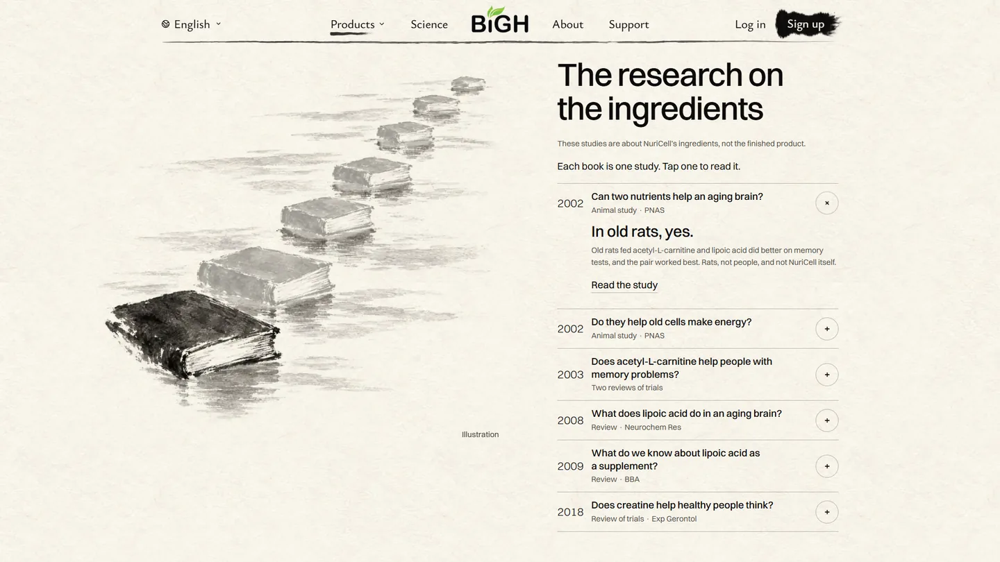
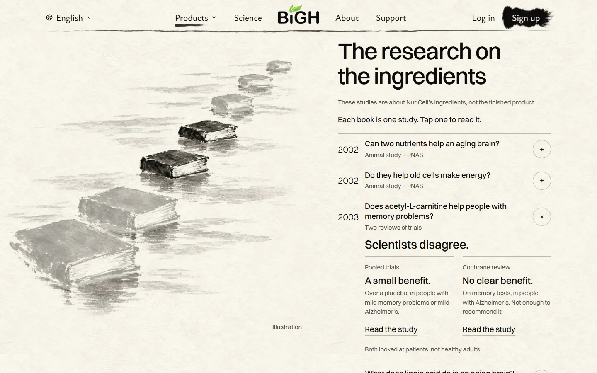
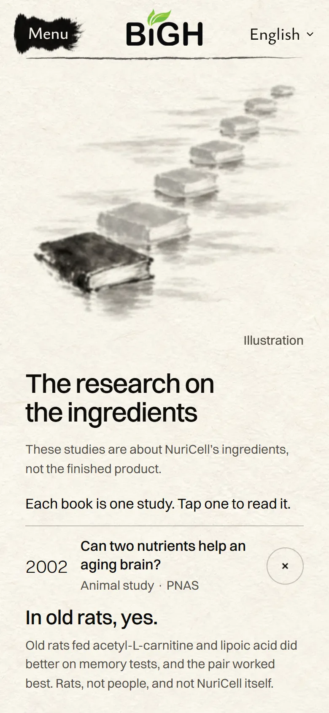
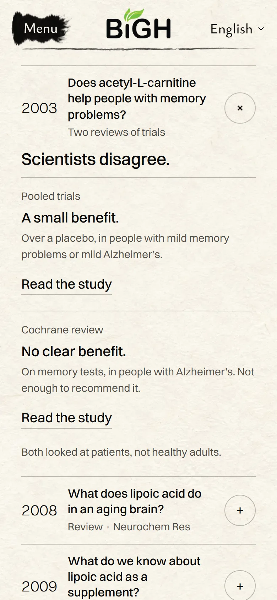

<title>NuriCell Research Books</title>
<meta name="claude:viewport-fit-sides" content="cover">
<link rel="preconnect" href="https://fonts.googleapis.com">
<link rel="preconnect" href="https://fonts.gstatic.com" crossorigin>
<link rel="stylesheet" href="https://fonts.googleapis.com/css2?family=Ysabeau:wght@500;600&family=Hanken+Grotesk:wght@400;500;600&display=swap">
<style>
  /* Layout: one quiet column on rice paper, like a page of the site; clips and stills sit in
     pairs that stack on a phone. Ink for words, one gold leaf for the score. */
  :root {
    --paper: #f3eee3;
    --paper-deep: #e9e2d3;
    --ink: #14120f;
    --muted: #5a554c;
    --hair: rgba(28, 27, 25, 0.22);
    --gold: #a67c2e;
    --display: "Ysabeau", "Iowan Old Style", Georgia, serif;
    --sans: "Hanken Grotesk", "Segoe UI", system-ui, sans-serif;
  }
  @media (prefers-color-scheme: dark) {
    :root:not([data-theme="light"]) {
      --paper: #16140f;
      --paper-deep: #211e17;
      --ink: #efe9dc;
      --muted: #b5ad9d;
      --hair: rgba(239, 233, 220, 0.2);
      --gold: #d4a94f;
      color-scheme: dark;
    }
  }
  :root[data-theme="dark"] {
    --paper: #16140f;
    --paper-deep: #211e17;
    --ink: #efe9dc;
    --muted: #b5ad9d;
    --hair: rgba(239, 233, 220, 0.2);
    --gold: #d4a94f;
    color-scheme: dark;
  }

  body {
    background: var(--paper);
    color: var(--ink);
    font-family: var(--sans);
    font-size: 17px;
    line-height: 1.5;
  }

  .page {
    display: grid;
    gap: 56px;
    max-width: 980px;
    margin: 0 auto;
    padding-block: 40px 72px;
    padding-left: max(16px, env(safe-area-inset-left, 0px));
    padding-right: max(16px, env(safe-area-inset-right, 0px));
  }

  header { display: grid; gap: 14px; max-width: 40em; }
  .kicker { margin: 0; color: var(--muted); font-size: 15px; letter-spacing: 0.02em; }
  h1 {
    margin: 0;
    font-family: var(--display);
    font-size: clamp(36px, 6vw, 58px);
    font-weight: 600;
    line-height: 1.02;
    letter-spacing: -0.01em;
    text-wrap: balance;
  }
  .lead { margin: 0; font-size: clamp(19px, 2.4vw, 22px); line-height: 1.4; }
  .score {
    display: flex;
    flex-wrap: wrap;
    align-items: baseline;
    gap: 6px 14px;
    margin: 4px 0 0;
    color: var(--muted);
    font-size: 15px;
  }
  .score b {
    color: var(--gold);
    font-family: var(--display);
    font-size: 30px;
    font-weight: 600;
    line-height: 1;
  }

  section { display: grid; gap: 18px; }
  h2 {
    margin: 0;
    font-family: var(--display);
    font-size: clamp(26px, 3.4vw, 34px);
    font-weight: 600;
    line-height: 1.1;
    text-wrap: balance;
  }
  .note { margin: 0; color: var(--muted); font-size: 15px; max-width: 40em; }

  .pair {
    display: grid;
    grid-template-columns: minmax(0, 1fr) minmax(0, 2.4fr);
    gap: 20px;
    align-items: start;
  }
  .stills { display: grid; gap: 28px; }
  .phones { display: grid; grid-template-columns: repeat(2, minmax(0, 1fr)); gap: 20px; max-width: 620px; }

  figure { display: grid; gap: 8px; margin: 0; min-width: 0; }
  figure video, figure img {
    display: block;
    width: 100%;
    max-width: 100%;
    height: auto;
    border: 1px solid var(--hair);
    border-radius: 6px;
    background: var(--paper-deep);
  }
  figcaption { color: var(--muted); font-size: 15px; line-height: 1.45; }
  figcaption strong { color: var(--ink); font-weight: 600; }

  ul.plain { display: grid; gap: 10px; margin: 0; padding: 0; list-style: none; max-width: 40em; }
  ul.plain li { padding-left: 18px; position: relative; }
  ul.plain li::before {
    content: "";
    position: absolute;
    left: 0;
    top: 0.62em;
    width: 7px;
    height: 7px;
    border-radius: 50%;
    background: var(--ink);
  }

  ol.questions { display: grid; margin: 0; padding: 0; list-style: none; border-top: 1px solid var(--hair); }
  ol.questions li {
    display: grid;
    grid-template-columns: 4.2ch minmax(0, 1fr);
    gap: 4px 16px;
    padding: 14px 0;
    border-bottom: 1px solid var(--hair);
  }
  .yr { font-size: 19px; font-weight: 400; font-variant-numeric: tabular-nums; grid-row: span 3; }
  .q { font-weight: 600; }
  .v { font-family: var(--display); font-size: 21px; font-weight: 600; line-height: 1.2; }
  .k { color: var(--muted); font-size: 14px; }

  .choices { display: grid; gap: 10px; margin: 0; padding: 0; list-style: none; max-width: 40em; }
  .choices li { display: grid; grid-template-columns: 2em minmax(0, 1fr); gap: 10px; }
  .tag {
    display: grid;
    place-items: center;
    width: 2em;
    height: 2em;
    border: 1px solid var(--ink);
    border-radius: 50%;
    font-weight: 600;
  }
  .pick { color: var(--gold); font-weight: 600; }

  @media (max-width: 720px) {
    .pair { grid-template-columns: minmax(0, 1fr); }
    .pair figure:first-child { max-width: 320px; }
    .page { gap: 44px; padding-block: 28px 56px; }
  }
  @media (prefers-reduced-motion: reduce) {
    video { animation: none; }
  }
</style>

<main class="page">
  <header>
    <p class="kicker">NuriCell · The research chapter · Mockup, not on the live site</p>
    <h1>Tap a book, read its study</h1>
    <p class="lead">Each book in the painting is one study. Tap it and that study opens, starting with a plain question.</p>
    <p class="score"><b>8/10</b> My own score. What still holds it back is at the end.</p>
  </header>

  <section aria-labelledby="watch">
    <h2 id="watch">Watch it</h2>
    <div class="pair">
      <figure>
        <video src="phone.mp4" autoplay muted loop playsinline preload="metadata" aria-label="Phone: tapping a book scrolls to its question"></video>
        <figcaption><strong>Phone.</strong> Tap a book. Its question comes up to the top.</figcaption>
      </figure>
      <figure>
        <video src="desk.mp4" autoplay muted loop playsinline preload="metadata" aria-label="Desktop: pointing at books, opening the 2003 pair and the 2018 question"></video>
        <figcaption><strong>Computer.</strong> Point at a book and it darkens. Click it and its study opens. Pointing at a question lights its book too.</figcaption>
      </figure>
    </div>
  </section>

  <section aria-labelledby="look">
    <h2 id="look">Still pictures</h2>
    <div class="stills">
      <figure>
        
        <figcaption><strong>At rest.</strong> The first study is open, so its book is dark. The other six wait, pale.</figcaption>
      </figure>
      <figure>
        
        <figcaption><strong>Scientists disagree.</strong> The two 2003 reviews share one question, so both books light up. One found a small benefit, the other found no clear benefit.</figcaption>
      </figure>
      <div class="phones">
        <figure>
          
          <figcaption><strong>Phone, at rest.</strong></figcaption>
        </figure>
        <figure>
          
          <figcaption><strong>Phone, after a tap.</strong></figcaption>
        </figure>
      </div>
    </div>
  </section>

  <section aria-labelledby="changed">
    <h2 id="changed">What changed</h2>
    <ul class="plain">
      <li>The small “The research” line over the title is gone.</li>
      <li>A new line says how it works: “Each book is one study. Tap one to read it.”</li>
      <li>Seven studies became six questions, because the two 2003 reviews share one.</li>
      <li>All six show at once, so the “Show all” button is gone.</li>
      <li>Each answer starts with a short, plain verdict. Animal studies still say “rats” or “animals” first.</li>
    </ul>
  </section>

  <section aria-labelledby="six">
    <h2 id="six">The six questions</h2>
    <p class="note">I wrote these from each paper’s own summary on PubMed. Please check the wording.</p>
    <ol class="questions">
      <li><span class="yr">2002</span><span class="q">Can two nutrients help an aging brain?</span><span class="v">In old rats, yes.</span><span class="k">Animal study · PNAS</span></li>
      <li><span class="yr">2002</span><span class="q">Do they help old cells make energy?</span><span class="v">In old rats, yes.</span><span class="k">Animal study · PNAS</span></li>
      <li><span class="yr">2003</span><span class="q">Does acetyl-L-carnitine help people with memory problems?</span><span class="v">Scientists disagree.</span><span class="k">Pooled trials: a small benefit · Cochrane review: no clear benefit</span></li>
      <li><span class="yr">2008</span><span class="q">What does lipoic acid do in an aging brain?</span><span class="v">In animals, it helped memory.</span><span class="k">Review by Dr. Liu · Neurochem Res</span></li>
      <li><span class="yr">2009</span><span class="q">What do we know about lipoic acid as a supplement?</span><span class="v">How it works is clearer than what it does for people.</span><span class="k">Review · BBA</span></li>
      <li><span class="yr">2018</span><span class="q">Does creatine help healthy people think?</span><span class="v">Maybe, for short-term memory and reasoning.</span><span class="k">Review of six small trials · Exp Gerontol</span></li>
    </ol>
  </section>

  <section aria-labelledby="holds">
    <h2 id="holds">What holds it back</h2>
    <ul class="plain">
      <li>At rest, six of the seven books are pale. So the painting no longer looks exactly like it does today.</li>
      <li>On a phone, the far books are small to tap. The questions are the easy tap.</li>
      <li>English only for now.</li>
    </ul>
  </section>

  <section aria-labelledby="call">
    <h2 id="call">Your call</h2>
    <ul class="choices">
      <li><span class="tag">A</span><span>Build it as shown. <span class="pick">My pick.</span></span></li>
      <li><span class="tag">B</span><span>Same, but keep all seven books dark until you point at or tap one.</span></li>
      <li><span class="tag">C</span><span>Something else. Tell me what.</span></li>
    </ul>
  </section>
</main>
